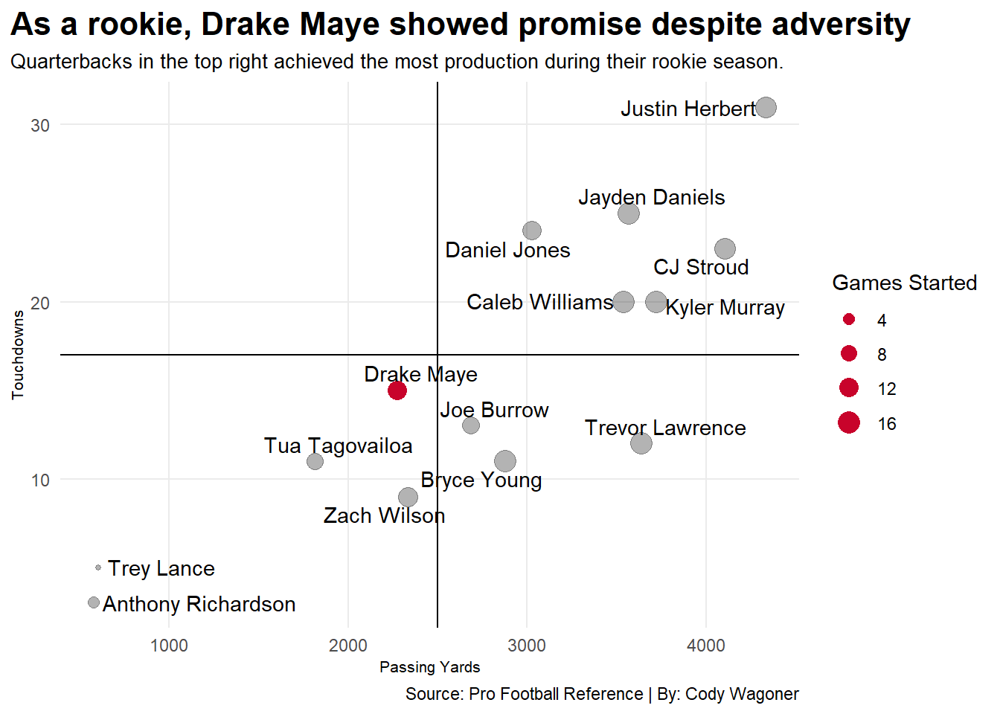
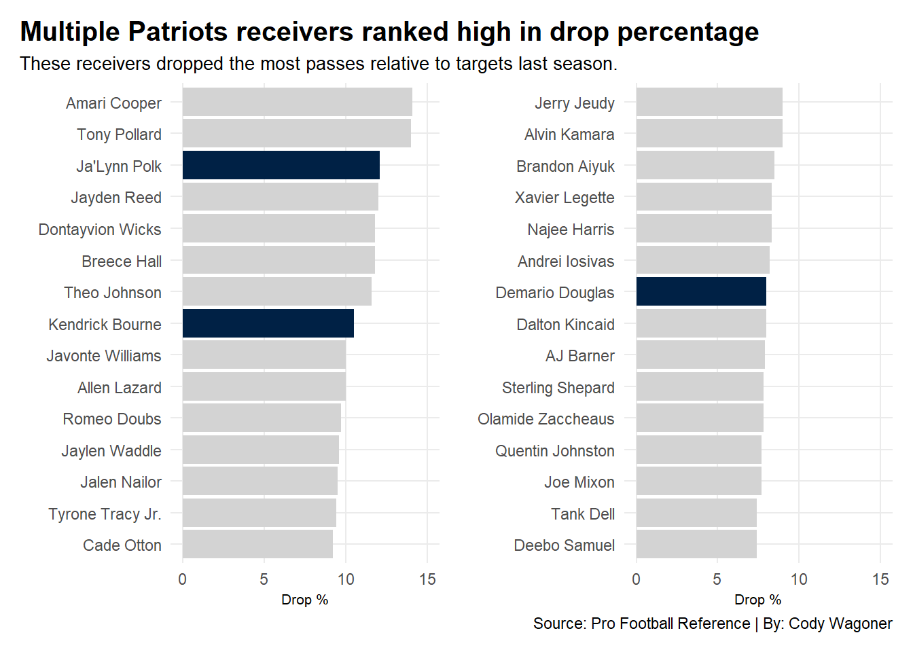

Is Drake Maye the Patriots Next Franchise-Altering Quarterback?
nfl
patriots
quarterbacks
Author
Cody Wagoner
Published
May 4, 2025
It is no secret that the New England Patriots have struggled to recover after losing future Hall of Fame quarterback Tom Brady. After drafting Mac Jones in the first round in 2021, the Patriots found themselves back in the same situation in 2024, drafting Drake Maye with the third overall pick.
However, whether the Patriots can achieve success with the second-year quarterback is yet to be known. Although the team has cycled through quarterbacks at the position since Brady left, none have successfully managed to even equal his production in his final season in New England.
Code
library(tidyverse)library(ggrepel)library(patchwork)library(gt)patriotspassing <-read_csv("patriotspassing.csv")passingsince2019 <- patriotspassing |>filter(Year >=2019)realpassers <- passingsince2019 |>filter(Yds...13>=500) |>select(Player, Year, GS, QBrec, Yds...13, TD, Int) |>arrange(Year)realpassers |>gt() |>cols_label(GS ="Games Started",QBrec ="Record",Yds...13 ="Passing Yards",TD ="Touchdowns",Int ="Interceptions" ) |>tab_header(title ="Patriots' quarterback play has fallen off since Brady left",subtitle ="New England quarterbacks have struggled to sustain success in recent years." ) |>tab_style(style =cell_text(color ="black", weight ="bold", align ="left"),locations =cells_title("title") ) |>tab_style(style =cell_text(color ="black", align ="left"),locations =cells_title("subtitle") ) |>tab_source_note(source_note =md("Source: Pro Football Reference | By: Cody Wagoner") ) |>tab_style(locations =cells_column_labels(columns =everything()),style =list(cell_borders(sides ="bottom", weight =px(3)),cell_text(weight ="bold", size=12) ) ) |>opt_row_striping() |>opt_table_lines("none") |>tab_style(style =list(cell_fill(color ="#C8032B"),cell_text(color ="white") ),locations =cells_body(rows = Player =="Drake Maye*")) |>tab_style(style =list(cell_fill(color ="#002145"),cell_text(color ="white") ),locations =cells_body(rows = Player =="Tom Brady") )
Patriots' quarterback play has fallen off since Brady left
New England quarterbacks have struggled to sustain success in recent years.
Player
Year
Games Started
Record
Passing Yards
Touchdowns
Interceptions
Tom Brady
2019
16
12-4-0
4057
24
8
Cam Newton
2020
15
7-8-0
2657
8
10
Mac Jones*
2021
17
10-7-0
3801
22
13
Mac Jones
2022
14
6-8-0
2997
14
11
Bailey Zappe
2022
2
2-0-0
781
5
3
Mac Jones
2023
11
2-9-0
2120
10
12
Bailey Zappe
2023
6
2-4-0
1272
6
9
Drake Maye*
2024
12
3-9-0
2276
15
10
Jacoby Brissett
2024
5
1-4-0
826
2
1
Source: Pro Football Reference | By: Cody Wagoner
After testing the waters with an aging Cam Newton in 2020, Patriots fans found renewed hope in Jones after the 2021 draft.
In his rookie season, Jones came close to matching Brady’s production. However, despite Jones’ rookie year, each quarterback to play significant time for the Patriots since Brady has performed significantly worse than him.
Unfortunately, having inconsistent offensive coordinators derailed Jones’ development, and his performance suffered because of it. After kicking the tires with Bailey Zappe in 2023, the team turned to Maye in the 2024 draft.
Maye started 12 games in 2024, after taking the reins from veteran Jacoby Brissett. When examining Maye’s performance in his rookie year, it is also important to look at other top-ten drafted quarterbacks’ rookie seasons since 2019.
Code
danieljones2019 <-read_csv("danieljones2019.csv")kylermurray2019 <-read_csv("kylermurray2019.csv")justinherbert2020 <-read_csv("justinherbert2020.csv")tuatagovailoa2020 <-read_csv("tuatagovailoa2020.csv")joeburrow2020 <-read_csv("joeburrow2020.csv")treylance2021 <-read_csv("treylance2021.csv")zachwilson2021 <-read_csv("zachwilson2021.csv")trevorlawrence2021 <-read_csv("trevorlawrence2021.csv")anthonyrichardson2023 <-read_csv("anthonyrichardson2023.csv")cjstroud2023 <-read_csv("cjstroud2023.csv")bryceyoung2023 <-read_csv("bryceyoung2023.csv")drakemaye2024 <-read_csv("drakemaye2024.csv")jaydendaniels2024 <-read_csv("jaydendaniels2024.csv")calebwilliams2024 <-read_csv("calebwilliams2024.csv")rookieqbs <-bind_rows(danieljones2019, kylermurray2019, justinherbert2020, tuatagovailoa2020, joeburrow2020, treylance2021, zachwilson2021, trevorlawrence2021, anthonyrichardson2023, cjstroud2023, bryceyoung2023, drakemaye2024, jaydendaniels2024, calebwilliams2024)rookieseasons <- rookieqbs |>mutate(Name =case_when( Team =="NYG"~"Daniel Jones", Team =="ARI"~"Kyler Murray", Team =="LAC"~"Justin Herbert", Team =="MIA"~"Tua Tagovailoa", Team =="SFO"~"Trey Lance", Team =="NYJ"~"Zach Wilson", Team =="JAX"~"Trevor Lawrence", Team =="IND"~"Anthony Richardson", Team =="CAR"~"Bryce Young", Team =="NWE"~"Drake Maye", Team =="WAS"~"Jayden Daniels", Team =="CHI"~"Caleb Williams", Team =="CIN"~"Joe Burrow", Team =="HOU"~"CJ Stroud",TRUE~ Team) )ggplot() +geom_point(data=rookieqbs, aes(x=Yds...12, y=TD, size=GS),alpha = .3) +scale_size(range =c(1, 5), name="Games Started") +geom_point(data=drakemaye2024, aes(x=Yds...12, y=TD, size=GS), color="#C8032B") +geom_vline(xintercept =2500) +geom_hline(yintercept =17) +labs(x="Passing Yards", y="Touchdowns", title="As a rookie, Drake Maye showed promise despite adversity", subtitle="Quarterbacks in the top right achieved the most production during their rookie season.", caption="Source: Pro Football Reference | By: Cody Wagoner" ) +theme_minimal() +theme(plot.title =element_text(size =16, face ="bold"),axis.title =element_text(size =8), plot.subtitle =element_text(size=10), panel.grid.minor =element_blank(),plot.title.position ="plot" ) +geom_text_repel(data=rookieseasons, aes(x=Yds...12, y=TD, label=Name) )

Despite having one of the worst receiving corps in the league, Maye’s rookie season was similar to Joe Burrow’s rookie season production-wise. Projected starting quarterbacks: Trevor Lawrence, Tua Tagovailoa, Bryce Young, and Burrow all threw for fewer touchdowns in their rookie year than Maye’s.
Although this comparison could be meaningless, it shows that if Maye is given equitable help on offense, his potential could be through the roof.
However, that was not the case last season, when three of his receivers ranked in the top 30 in drop percentage. Demario Douglas and Kendrick Bourne also ranked second and fifth, respectively, in receiving yards for the team.
Code
receiving <-read_csv("top30drops.csv")top15drops <- receiving |>top_n(n =15, wt =`Drop%`)patriotsdrops <- top15drops |>filter( Team =="NWE")bar1 <-ggplot() +geom_bar(data=top15drops, aes(x=reorder(Player, `Drop%`), weight=`Drop%`), fill="lightgrey") +geom_bar(data=patriotsdrops, aes(x=reorder(Player, `Drop%`), weight=`Drop%`), fill="#002145") +coord_flip() +scale_y_continuous(limits =c(0, 15)) +labs(title ="Multiple Patriots receivers ranked high in drop percentage",subtitle ="These receivers dropped the most passes relative to targets last season.",caption ="",x ="",y ="Drop %") +theme_minimal()+theme(plot.title =element_text(size =15, face ="bold"),axis.title =element_text(size =8), plot.subtitle =element_text(size=10), panel.grid.minor =element_blank(),plot.title.position ="plot" ) next15drops <- receiving |>top_n(n =-15, wt =`Drop%`)patriotsdrops2 <- next15drops |>filter( Team =="NWE")bar2 <-ggplot() +geom_bar(data=next15drops, aes(x=reorder(Player, `Drop%`), weight=`Drop%`), fill="lightgrey") +geom_bar(data=patriotsdrops2, aes(x=reorder(Player, `Drop%`), weight=`Drop%`), fill="#002145") +coord_flip() +scale_y_continuous(limits =c(0, 15)) +labs(title ="",subtitle ="",caption ="Source: Pro Football Reference | By: Cody Wagoner",x ="",y ="Drop %") +theme_minimal()+theme(plot.title =element_text(size =15, face ="bold"),axis.title =element_text(size =8), plot.subtitle =element_text(size=10), panel.grid.minor =element_blank(),plot.title.position ="plot" ) bar1 + bar2

In an attempt to assist Maye’s development, the Patriots’ front office has made multiple moves this offseason to bolster Maye’s weapons and protection. The team signed veteran wide receiver Stefon Diggs and right tackle Morgan Moses in free agency, while drafting left tackle Will Campbell, running back TreVeyon Henderson, and wide receiver Kyle Williams within the first three rounds of the draft.
Each of these players helps strengthen Maye’s supporting cast in 2025. Only time will tell whether these moves will pay off for the team and its young quarterback’s development. With the added security and receiving options, second-year Maye is in the best position since Brady left to achieve high-level production within the team’s offense.